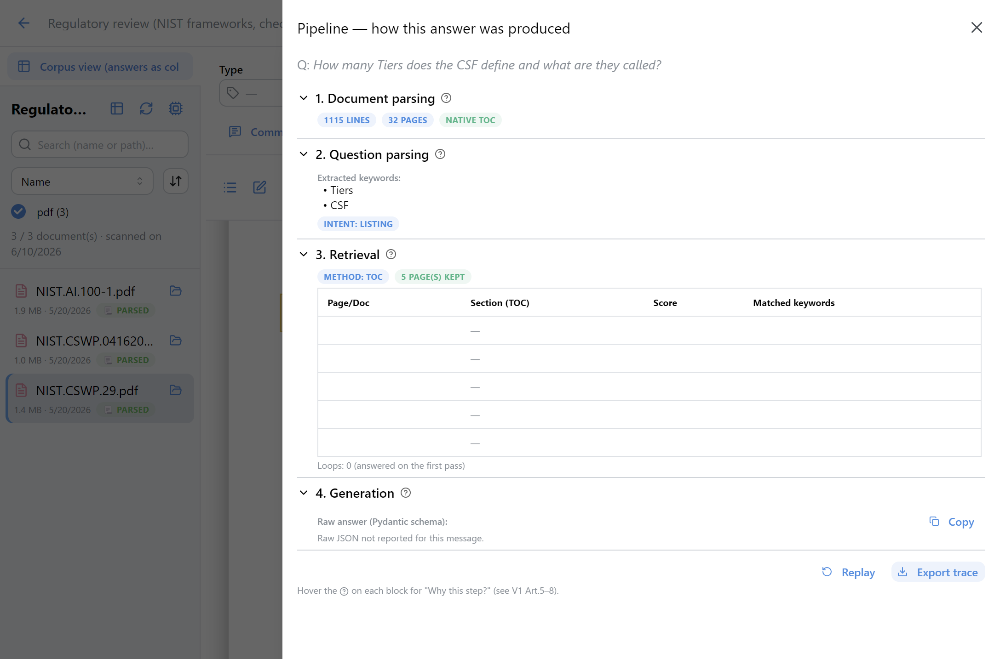
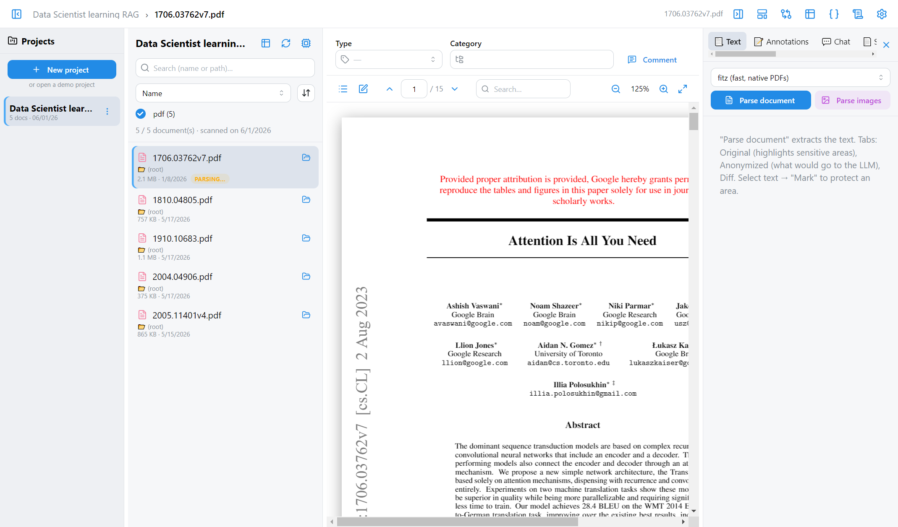
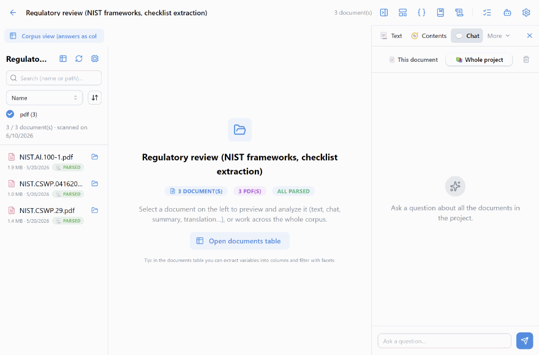
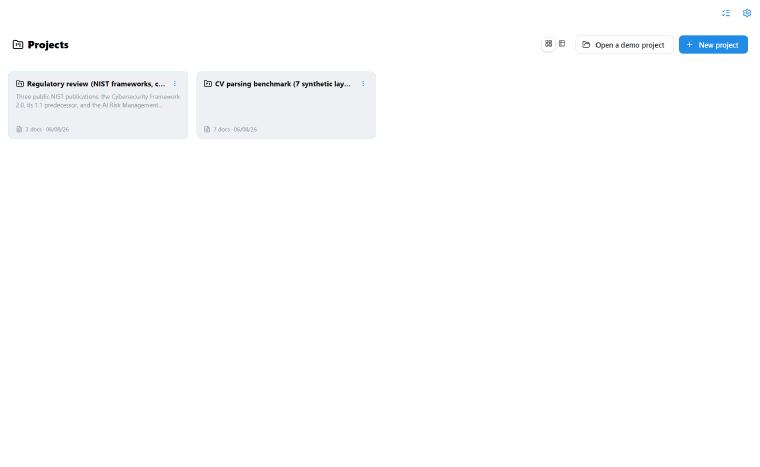
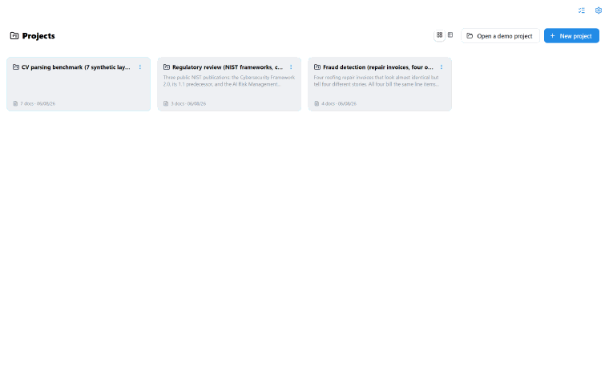

Le moteur, dans de vraies interfaces
Les mêmes quatre briques que dans les articles, mises en application. Une app bureau qui indexe un dossier de documents et répond, et des démos web par article. Dans les deux cas, chaque étape reste visible.
Le poste de travail documentaire
Une application de bureau qui indexe un dossier de documents et répond à vos questions, sur votre machine. Le moteur tourne en local via un sidecar Python.
Chaque réponse montre sa démarche
Le panneau « comment cette réponse a été produite » déroule les quatre briques : parsing du document, parsing de la question, retrieval, génération. Rien n'est caché, tout est rejouable.


Le document reste au centre
Le PDF est affiché tel quel, avec le texte parsé, les annotations et le chat en regard. On lit la source, on ne la quitte jamais des yeux.
En action
Quelques scénarios, du chat sur tout le corpus aux intentions typées.



Comment ça marche
Tout reste local : l'index vit dans un dossier à côté des fichiers scannés, rien ne part sur un serveur.
Une démo web par article
En complément de l'app bureau, chaque article aura sa démo web : on voit la brique tourner sur un vrai document, pas une capture. Parsing, parsing de la question, retrieval, génération.
- On dépose un PDF, on pose une question, on regarde le pipeline répondre.
- La réponse est sourcée : on remonte à la ligne exacte dans le document.
Les démos web interactives arrivent article par article.